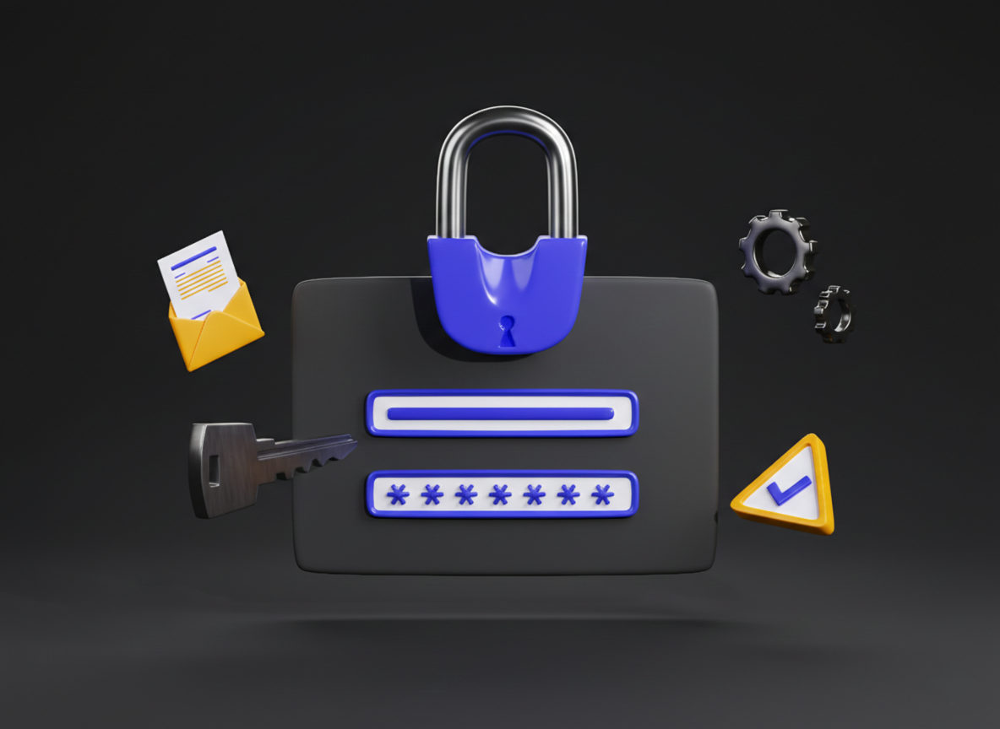

Αν έχετε ξεχάσει το PIN πρόσβασης στον λογαριασμό σας ή θέλετε να το αλλάξετε για λόγους ασφαλείας, το Evox παρέχει μια απλή διαδικασία ανάκτησης για να διασφαλίσετε ότι δεν θα χάσετε την πρόσβαση στις αναμνήσεις σας.

Διαδικασία Ανάκτησης
Ακολουθήστε τα παρακάτω βήματα για να ορίσετε ένα νέο PIN στον λογαριασμό σας:
- Στην οθόνη σύνδεσης, επιλέξτε το σύνδεσμο "Ξέχασα το PIN μου".
- Εισάγετε το Email ή το Username που χρησιμοποιήσατε κατά την εγγραφή σας.
- Θα λάβετε έναν κωδικό επαλήθευσης στο email σας ή μέσω της συνδεδεμένης μεθόδου (π.χ. Instagram).
- Εισάγετε τον κωδικό στην εφαρμογή και ορίστε το νέο σας PIN (τουλάχιστον 6 ψηφία).
Συμβουλές Ασφαλείας
Για την καλύτερη προστασία του λογαριασμού σας, λάβετε υπόψη τα εξής:
- Αποφύγετε απλά PIN όπως "1234" ή την ημερομηνία γέννησής σας.
- Μην μοιράζεστε ποτέ το PIN σας με άλλους χρήστες ή συμμαθητές σας.
- Αν υποψιάζεστε ότι κάποιος άλλος γνωρίζει το PIN σας, προχωρήστε σε άμεση αλλαγή μέσα από τις Ρυθμίσεις Προφίλ.
- Βεβαιωθείτε ότι έχετε πρόσβαση στο email που δηλώσατε, καθώς είναι ο μοναδικός τρόπος αυτόματης ανάκτησης.
Χρειάζεστε περισσότερη βοήθεια;
Αν δεν μπορείτε να ολοκληρώσετε την επαναφορά ή δεν λαμβάνετε τον κωδικό επιβεβαίωσης, επικοινωνήστε με την τεχνική υποστήριξη στο: admin@evoxs.xyz.